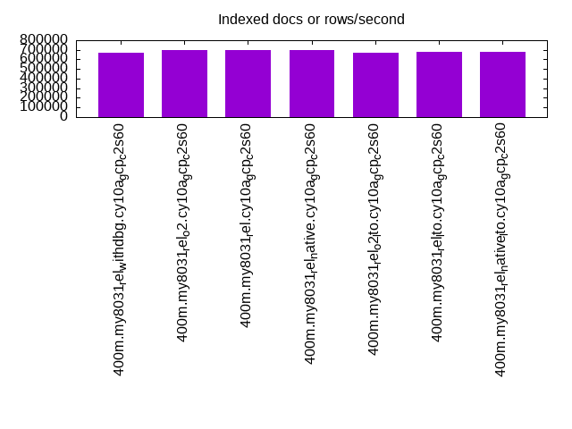
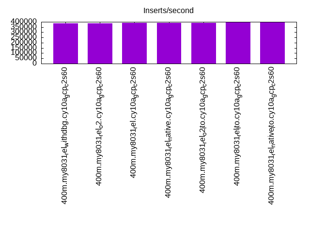

This is a report for the insert benchmark with 400M docs and 20 client(s). It is generated by scripts (bash, awk, sed) and Tufte might not be impressed. An overview of the insert benchmark is here and a short update is here. Below, by DBMS, I mean DBMS+version.config. An example is my8020.c10b40 where my means MySQL, 8020 is version 8.0.20 and c10b40 is the name for the configuration file.
This is a report for the insert benchmark with 400M docs and 20 client(s). It is generated by scripts (bash, awk, sed) and Tufte might not be impressed. An overview of the insert benchmark is here and a short update is here. Below, by DBMS, I mean DBMS+version.config. An example is my8020.c10b40 where my means MySQL, 8020 is version 8.0.20 and c10b40 is the name for the configuration file.The test server is c2-standard-60 from GCP with 30 cores, hyperthreads disabled, 240G RAM and 3T of NVMe (XFS with RAID0 over 8 devices). The benchmark was run with 20 clients and there were 1 or 2 connections per client (1 for queries, 1 for inserts). It uses 20 tables with a client per table. It loads 20M rows per table without secondary indexes, creates secondary indexes, loads another 20M rows per table then does 3 read+write tests for one hour each that do queries as fast as possible with 100, 500 and then 1000 writes/second/client concurrent with the queries. The database is cached by the storage engine and the only IO is for writes. Clients and the DBMS share one server. The per-database configs are in the per-database subdirectories here.
The tested DBMS are:
The numbers are inserts/s for l.i0 and l.i1, indexed docs (or rows) /s for l.x and queries/s for q*.2. The values are the average rate over the entire test for inserts (IPS) and queries (QPS). The range of values for IPS and QPS is split into 3 parts: bottom 25%, middle 50%, top 25%. Values in the bottom 25% have a red background, values in the top 25% have a green background and values in the middle have no color. A gray background is used for values that can be ignored because the DBMS did not sustain the target insert rate. Red backgrounds are not used when the minimum value is within 80% of the max value.
| dbms | l.i0 | l.x | l.i1 | q100.1 | q500.1 | q1000.1 |
|---|---|---|---|---|---|---|
| 400m.my8031_rel_withdbg.cy10a_gcp_c2s60 | 987654 | 666833 | 386100 | 102794 | 104222 | 101957 |
| 400m.my8031_rel_o2.cy10a_gcp_c2s60 | 961538 | 701930 | 383877 | 102768 | 104103 | 102037 |
| 400m.my8031_rel.cy10a_gcp_c2s60 | 1007557 | 694618 | 391389 | 103357 | 104810 | 102498 |
| 400m.my8031_rel_native.cy10a_gcp_c2s60 | 1005025 | 693414 | 392927 | 100811 | 102190 | 100501 |
| 400m.my8031_rel_o2_lto.cy10a_gcp_c2s60 | 1005025 | 672437 | 391007 | 103613 | 104853 | 103018 |
| 400m.my8031_rel_lto.cy10a_gcp_c2s60 | 1002506 | 674705 | 398010 | 104056 | 105513 | 103646 |
| 400m.my8031_rel_native_lto.cy10a_gcp_c2s60 | 997506 | 679287 | 396040 | 102812 | 103751 | 101874 |
This table has relative throughput, throughput for the DBMS relative to the DBMS in the first line, using the absolute throughput from the previous table.
| dbms | l.i0 | l.x | l.i1 | q100.1 | q500.1 | q1000.1 |
|---|---|---|---|---|---|---|
| 400m.my8031_rel_withdbg.cy10a_gcp_c2s60 | 1.00 | 1.00 | 1.00 | 1.00 | 1.00 | 1.00 |
| 400m.my8031_rel_o2.cy10a_gcp_c2s60 | 0.97 | 1.05 | 0.99 | 1.00 | 1.00 | 1.00 |
| 400m.my8031_rel.cy10a_gcp_c2s60 | 1.02 | 1.04 | 1.01 | 1.01 | 1.01 | 1.01 |
| 400m.my8031_rel_native.cy10a_gcp_c2s60 | 1.02 | 1.04 | 1.02 | 0.98 | 0.98 | 0.99 |
| 400m.my8031_rel_o2_lto.cy10a_gcp_c2s60 | 1.02 | 1.01 | 1.01 | 1.01 | 1.01 | 1.01 |
| 400m.my8031_rel_lto.cy10a_gcp_c2s60 | 1.02 | 1.01 | 1.03 | 1.01 | 1.01 | 1.02 |
| 400m.my8031_rel_native_lto.cy10a_gcp_c2s60 | 1.01 | 1.02 | 1.03 | 1.00 | 1.00 | 1.00 |
This lists the average rate of inserts/s for the tests that do inserts concurrent with queries. For such tests the query rate is listed in the table above. The read+write tests are setup so that the insert rate should match the target rate every second. Cells that are not at least 95% of the target have a red background to indicate a failure to satisfy the target.
| dbms | q100.1 | q500.1 | q1000.1 |
|---|---|---|---|
| my8031_rel_withdbg.cy10a_gcp_c2s60 | 1977 | 9879 | 19769 |
| my8031_rel_o2.cy10a_gcp_c2s60 | 1976 | 9885 | 19769 |
| my8031_rel.cy10a_gcp_c2s60 | 1976 | 9885 | 19769 |
| my8031_rel_native.cy10a_gcp_c2s60 | 1977 | 9879 | 19769 |
| my8031_rel_o2_lto.cy10a_gcp_c2s60 | 1977 | 9879 | 19769 |
| my8031_rel_lto.cy10a_gcp_c2s60 | 1976 | 9879 | 19769 |
| my8031_rel_native_lto.cy10a_gcp_c2s60 | 1977 | 9879 | 19769 |
| target | 2000 | 10000 | 20000 |
l.i0: load without secondary indexes. Graphs for performance per 1-second interval are here.
Average throughput:
Insert response time histogram: each cell has the percentage of responses that take <= the time in the header and max is the max response time in seconds. For the max column values in the top 25% of the range have a red background and in the bottom 25% of the range have a green background. The red background is not used when the min value is within 80% of the max value.
| dbms | 256us | 1ms | 4ms | 16ms | 64ms | 256ms | 1s | 4s | 16s | gt | max |
|---|---|---|---|---|---|---|---|---|---|---|---|
| my8031_rel_withdbg.cy10a_gcp_c2s60 | 0.400 | 99.008 | 0.486 | 0.068 | 0.035 | 0.002 | 0.287 | ||||
| my8031_rel_o2.cy10a_gcp_c2s60 | 0.493 | 98.894 | 0.515 | 0.062 | 0.035 | 0.002 | 0.306 | ||||
| my8031_rel.cy10a_gcp_c2s60 | 0.728 | 98.685 | 0.483 | 0.067 | 0.034 | 0.002 | 0.301 | ||||
| my8031_rel_native.cy10a_gcp_c2s60 | 0.647 | 98.778 | 0.477 | 0.061 | 0.035 | 0.002 | 0.272 | ||||
| my8031_rel_o2_lto.cy10a_gcp_c2s60 | 0.775 | 98.644 | 0.486 | 0.058 | 0.034 | 0.003 | 0.281 | ||||
| my8031_rel_lto.cy10a_gcp_c2s60 | 0.831 | 98.577 | 0.486 | 0.071 | 0.033 | 0.003 | 0.298 | ||||
| my8031_rel_native_lto.cy10a_gcp_c2s60 | 0.590 | 98.833 | 0.479 | 0.062 | 0.034 | 0.002 | 0.266 |
Performance metrics for the DBMS listed above. Some are normalized by throughput, others are not. Legend for results is here.
ips qps rps rmbps wps wmbps rpq rkbpq wpi wkbpi csps cpups cspq cpupq dbgb1 dbgb2 rss maxop p50 p99 tag 987654 0 0 0.0 1622.7 214.5 0.000 0.000 0.002 0.222 189086 66.1 0.191 20 26.4 155.0 9.3 0.287 53642 38958 400m.my8031_rel_withdbg.cy10a_gcp_c2s60 961538 0 0 0.0 1596.4 214.9 0.000 0.000 0.002 0.229 186803 65.5 0.194 20 26.4 155.0 9.3 0.306 52343 37874 400m.my8031_rel_o2.cy10a_gcp_c2s60 1007557 0 0 0.0 1639.9 221.9 0.000 0.000 0.002 0.226 193726 66.1 0.192 20 26.4 155.0 9.3 0.301 53741 39970 400m.my8031_rel.cy10a_gcp_c2s60 1005025 0 0 0.0 1643.4 220.2 0.000 0.000 0.002 0.224 199715 66.2 0.199 20 26.4 155.0 9.3 0.272 52743 38780 400m.my8031_rel_native.cy10a_gcp_c2s60 1005025 0 0 0.0 1646.7 219.4 0.000 0.000 0.002 0.224 194636 66.1 0.194 20 26.4 155.0 9.3 0.281 53841 40256 400m.my8031_rel_o2_lto.cy10a_gcp_c2s60 1002506 0 0 0.0 1650.4 220.9 0.000 0.000 0.002 0.226 199267 65.3 0.199 20 26.4 155.0 9.3 0.298 52643 37858 400m.my8031_rel_lto.cy10a_gcp_c2s60 997506 0 0 0.0 1646.7 221.0 0.000 0.000 0.002 0.227 197380 65.9 0.198 20 26.4 155.0 9.3 0.266 53341 39656 400m.my8031_rel_native_lto.cy10a_gcp_c2s60
l.x: create secondary indexes.
Average throughput:
Performance metrics for the DBMS listed above. Some are normalized by throughput, others are not. Legend for results is here.
ips qps rps rmbps wps wmbps rpq rkbpq wpi wkbpi csps cpups cspq cpupq dbgb1 dbgb2 rss maxop p50 p99 tag 666833 0 3358 231.0 14257.7 638.2 0.005 0.355 0.021 0.980 489994 51.8 0.735 23 58.8 187.4 9.3 0.054 NA NA 400m.my8031_rel_withdbg.cy10a_gcp_c2s60 701930 0 3538 243.1 14842.0 670.5 0.005 0.355 0.021 0.978 450656 54.3 0.642 23 58.8 187.4 9.3 0.016 NA NA 400m.my8031_rel_o2.cy10a_gcp_c2s60 694618 0 3493 240.9 14729.3 664.6 0.005 0.355 0.021 0.980 465565 53.7 0.670 23 58.8 187.4 9.3 0.013 NA NA 400m.my8031_rel.cy10a_gcp_c2s60 693414 0 3496 241.0 14726.4 663.5 0.005 0.356 0.021 0.980 477765 53.2 0.689 23 58.8 187.4 9.3 0.017 NA NA 400m.my8031_rel_native.cy10a_gcp_c2s60 672437 0 3390 232.9 14352.9 640.7 0.005 0.355 0.021 0.976 485944 52.0 0.723 23 58.8 187.4 9.3 0.052 NA NA 400m.my8031_rel_o2_lto.cy10a_gcp_c2s60 674705 0 3416 234.9 14416.3 646.9 0.005 0.357 0.021 0.982 485218 51.2 0.719 23 58.8 187.4 9.3 0.039 NA NA 400m.my8031_rel_lto.cy10a_gcp_c2s60 679287 0 3432 236.8 14485.5 652.0 0.005 0.357 0.021 0.983 480223 49.8 0.707 22 58.8 187.4 9.3 0.047 NA NA 400m.my8031_rel_native_lto.cy10a_gcp_c2s60
l.i1: continue load after secondary indexes created. Graphs for performance per 1-second interval are here.
Average throughput:
Insert response time histogram: each cell has the percentage of responses that take <= the time in the header and max is the max response time in seconds. For the max column values in the top 25% of the range have a red background and in the bottom 25% of the range have a green background. The red background is not used when the min value is within 80% of the max value.
| dbms | 256us | 1ms | 4ms | 16ms | 64ms | 256ms | 1s | 4s | 16s | gt | max |
|---|---|---|---|---|---|---|---|---|---|---|---|
| my8031_rel_withdbg.cy10a_gcp_c2s60 | 98.340 | 1.534 | 0.095 | 0.028 | 0.002 | 0.777 | |||||
| my8031_rel_o2.cy10a_gcp_c2s60 | 98.419 | 1.463 | 0.084 | 0.032 | 0.002 | 0.977 | |||||
| my8031_rel.cy10a_gcp_c2s60 | 98.426 | 1.456 | 0.084 | 0.032 | 0.002 | 0.819 | |||||
| my8031_rel_native.cy10a_gcp_c2s60 | 98.300 | 1.575 | 0.096 | 0.025 | 0.003 | nonzero | 1.009 | ||||
| my8031_rel_o2_lto.cy10a_gcp_c2s60 | 98.469 | 1.413 | 0.088 | 0.027 | 0.003 | nonzero | 1.178 | ||||
| my8031_rel_lto.cy10a_gcp_c2s60 | 98.569 | 1.310 | 0.087 | 0.031 | 0.002 | nonzero | 1.286 | ||||
| my8031_rel_native_lto.cy10a_gcp_c2s60 | 98.664 | 1.216 | 0.084 | 0.034 | 0.002 | nonzero | 1.379 |
Performance metrics for the DBMS listed above. Some are normalized by throughput, others are not. Legend for results is here.
ips qps rps rmbps wps wmbps rpq rkbpq wpi wkbpi csps cpups cspq cpupq dbgb1 dbgb2 rss maxop p50 p99 tag 386100 0 382 8.3 8645.5 428.7 0.001 0.022 0.022 1.137 250807 68.4 0.650 53 157.8 286.4 9.3 0.777 20128 4147 400m.my8031_rel_withdbg.cy10a_gcp_c2s60 383877 0 349 10.6 8561.9 426.5 0.001 0.028 0.022 1.138 237599 68.7 0.619 54 157.8 286.4 9.3 0.977 20478 6247 400m.my8031_rel_o2.cy10a_gcp_c2s60 391389 0 411 10.8 8417.1 425.6 0.001 0.028 0.022 1.114 254878 67.7 0.651 52 157.8 286.4 9.3 0.819 21477 5594 400m.my8031_rel.cy10a_gcp_c2s60 392927 0 468 10.5 8496.5 427.8 0.001 0.027 0.022 1.115 273320 68.5 0.696 52 157.8 286.4 9.3 1.009 20828 6343 400m.my8031_rel_native.cy10a_gcp_c2s60 391007 0 369 9.7 8531.2 428.0 0.001 0.025 0.022 1.121 242094 68.5 0.619 53 157.8 286.4 9.3 1.178 20628 6043 400m.my8031_rel_o2_lto.cy10a_gcp_c2s60 398010 0 493 13.8 8438.5 429.0 0.001 0.035 0.021 1.104 242979 67.8 0.610 51 157.8 286.4 9.3 1.286 21127 5694 400m.my8031_rel_lto.cy10a_gcp_c2s60 396040 0 483 14.9 8307.5 424.5 0.001 0.038 0.021 1.098 232516 67.9 0.587 51 157.8 286.4 9.3 1.379 21030 8041 400m.my8031_rel_native_lto.cy10a_gcp_c2s60
q100.1: range queries with 100 insert/s per client. Graphs for performance per 1-second interval are here.
Average throughput:
Query response time histogram: each cell has the percentage of responses that take <= the time in the header and max is the max response time in seconds. For max values in the top 25% of the range have a red background and in the bottom 25% of the range have a green background. The red background is not used when the min value is within 80% of the max value.
| dbms | 256us | 1ms | 4ms | 16ms | 64ms | 256ms | 1s | 4s | 16s | gt | max |
|---|---|---|---|---|---|---|---|---|---|---|---|
| my8031_rel_withdbg.cy10a_gcp_c2s60 | 96.480 | 3.516 | 0.004 | nonzero | nonzero | 0.023 | |||||
| my8031_rel_o2.cy10a_gcp_c2s60 | 96.806 | 3.190 | 0.004 | nonzero | nonzero | 0.023 | |||||
| my8031_rel.cy10a_gcp_c2s60 | 96.986 | 3.010 | 0.004 | nonzero | nonzero | 0.028 | |||||
| my8031_rel_native.cy10a_gcp_c2s60 | 96.005 | 3.991 | 0.004 | nonzero | nonzero | 0.024 | |||||
| my8031_rel_o2_lto.cy10a_gcp_c2s60 | 96.916 | 3.080 | 0.004 | nonzero | nonzero | 0.024 | |||||
| my8031_rel_lto.cy10a_gcp_c2s60 | 96.819 | 3.177 | 0.004 | nonzero | nonzero | 0.027 | |||||
| my8031_rel_native_lto.cy10a_gcp_c2s60 | 96.542 | 3.453 | 0.004 | nonzero | nonzero | 0.024 |
Insert response time histogram: each cell has the percentage of responses that take <= the time in the header and max is the max response time in seconds. For max values in the top 25% of the range have a red background and in the bottom 25% of the range have a green background. The red background is not used when the min value is within 80% of the max value.
| dbms | 256us | 1ms | 4ms | 16ms | 64ms | 256ms | 1s | 4s | 16s | gt | max |
|---|---|---|---|---|---|---|---|---|---|---|---|
| my8031_rel_withdbg.cy10a_gcp_c2s60 | 95.690 | 4.300 | 0.010 | 0.022 | |||||||
| my8031_rel_o2.cy10a_gcp_c2s60 | 95.492 | 4.489 | 0.019 | 0.042 | |||||||
| my8031_rel.cy10a_gcp_c2s60 | 93.867 | 6.110 | 0.024 | 0.024 | |||||||
| my8031_rel_native.cy10a_gcp_c2s60 | 95.121 | 4.854 | 0.025 | 0.026 | |||||||
| my8031_rel_o2_lto.cy10a_gcp_c2s60 | 94.769 | 5.194 | 0.036 | 0.025 | |||||||
| my8031_rel_lto.cy10a_gcp_c2s60 | 95.417 | 4.578 | 0.006 | 0.019 | |||||||
| my8031_rel_native_lto.cy10a_gcp_c2s60 | 95.271 | 4.725 | 0.004 | 0.022 |
Performance metrics for the DBMS listed above. Some are normalized by throughput, others are not. Legend for results is here.
ips qps rps rmbps wps wmbps rpq rkbpq wpi wkbpi csps cpups cspq cpupq dbgb1 dbgb2 rss maxop p50 p99 tag 1977 102794 0 0.0 3530.6 101.6 0.000 0.000 1.786 52.650 400275 65.9 3.894 192 159.7 288.3 9.3 0.023 5242 4779 400m.my8031_rel_withdbg.cy10a_gcp_c2s60 1976 102768 0 0.0 3555.8 102.3 0.000 0.000 1.800 52.994 399557 66.1 3.888 193 159.7 288.3 9.3 0.023 5210 4763 400m.my8031_rel_o2.cy10a_gcp_c2s60 1976 103357 0 0.0 3506.4 101.4 0.000 0.000 1.775 52.530 400303 66.0 3.873 192 159.7 288.3 9.3 0.028 5178 4767 400m.my8031_rel.cy10a_gcp_c2s60 1977 100811 0 0.0 3569.2 102.8 0.000 0.000 1.805 53.226 393019 66.1 3.899 197 159.7 288.3 9.3 0.024 5050 4763 400m.my8031_rel_native.cy10a_gcp_c2s60 1977 103613 0 0.0 3553.1 102.4 0.000 0.000 1.797 53.050 402063 65.9 3.880 191 159.7 288.3 9.3 0.024 5242 4795 400m.my8031_rel_o2_lto.cy10a_gcp_c2s60 1976 104056 0 0.0 3568.9 102.8 0.000 0.000 1.806 53.296 404004 65.9 3.883 190 159.7 288.3 9.3 0.027 5324 4890 400m.my8031_rel_lto.cy10a_gcp_c2s60 1977 102812 0 0.0 3569.0 103.0 0.000 0.000 1.805 53.365 400246 65.8 3.893 192 159.7 288.3 9.3 0.024 5132 4731 400m.my8031_rel_native_lto.cy10a_gcp_c2s60
q500.1: range queries with 500 insert/s per client. Graphs for performance per 1-second interval are here.
Average throughput:
Query response time histogram: each cell has the percentage of responses that take <= the time in the header and max is the max response time in seconds. For max values in the top 25% of the range have a red background and in the bottom 25% of the range have a green background. The red background is not used when the min value is within 80% of the max value.
| dbms | 256us | 1ms | 4ms | 16ms | 64ms | 256ms | 1s | 4s | 16s | gt | max |
|---|---|---|---|---|---|---|---|---|---|---|---|
| my8031_rel_withdbg.cy10a_gcp_c2s60 | 97.231 | 2.746 | 0.021 | 0.002 | nonzero | 0.023 | |||||
| my8031_rel_o2.cy10a_gcp_c2s60 | 97.459 | 2.519 | 0.020 | 0.002 | nonzero | 0.028 | |||||
| my8031_rel.cy10a_gcp_c2s60 | 97.606 | 2.371 | 0.021 | 0.002 | nonzero | 0.020 | |||||
| my8031_rel_native.cy10a_gcp_c2s60 | 96.853 | 3.123 | 0.021 | 0.002 | nonzero | 0.023 | |||||
| my8031_rel_o2_lto.cy10a_gcp_c2s60 | 97.519 | 2.457 | 0.021 | 0.002 | nonzero | 0.027 | |||||
| my8031_rel_lto.cy10a_gcp_c2s60 | 97.440 | 2.537 | 0.021 | 0.002 | nonzero | 0.027 | |||||
| my8031_rel_native_lto.cy10a_gcp_c2s60 | 97.140 | 2.838 | 0.020 | 0.002 | nonzero | 0.024 |
Insert response time histogram: each cell has the percentage of responses that take <= the time in the header and max is the max response time in seconds. For max values in the top 25% of the range have a red background and in the bottom 25% of the range have a green background. The red background is not used when the min value is within 80% of the max value.
| dbms | 256us | 1ms | 4ms | 16ms | 64ms | 256ms | 1s | 4s | 16s | gt | max |
|---|---|---|---|---|---|---|---|---|---|---|---|
| my8031_rel_withdbg.cy10a_gcp_c2s60 | 53.681 | 45.512 | 0.807 | 0.043 | |||||||
| my8031_rel_o2.cy10a_gcp_c2s60 | 59.064 | 40.235 | 0.701 | 0.053 | |||||||
| my8031_rel.cy10a_gcp_c2s60 | 52.796 | 46.470 | 0.734 | 0.045 | |||||||
| my8031_rel_native.cy10a_gcp_c2s60 | 52.999 | 46.037 | 0.963 | 0.043 | |||||||
| my8031_rel_o2_lto.cy10a_gcp_c2s60 | 53.202 | 45.981 | 0.817 | 0.048 | |||||||
| my8031_rel_lto.cy10a_gcp_c2s60 | 59.745 | 39.596 | 0.659 | 0.054 | |||||||
| my8031_rel_native_lto.cy10a_gcp_c2s60 | 62.870 | 36.519 | 0.611 | 0.046 |
Performance metrics for the DBMS listed above. Some are normalized by throughput, others are not. Legend for results is here.
ips qps rps rmbps wps wmbps rpq rkbpq wpi wkbpi csps cpups cspq cpupq dbgb1 dbgb2 rss maxop p50 p99 tag 9879 104222 0 0.0 507.9 21.4 0.000 0.000 0.051 2.216 378326 66.3 3.630 191 167.8 296.3 9.3 0.023 5210 4891 400m.my8031_rel_withdbg.cy10a_gcp_c2s60 9885 104103 0 0.0 533.2 22.4 0.000 0.000 0.054 2.321 378489 66.8 3.636 193 167.7 296.3 9.3 0.028 5258 4955 400m.my8031_rel_o2.cy10a_gcp_c2s60 9885 104810 0 0.0 474.7 21.1 0.000 0.000 0.048 2.185 379441 66.2 3.620 189 167.7 296.3 9.3 0.020 5194 4923 400m.my8031_rel.cy10a_gcp_c2s60 9879 102190 0 0.0 512.8 21.4 0.000 0.000 0.052 2.217 372393 66.7 3.644 196 167.7 296.3 9.3 0.023 5081 4812 400m.my8031_rel_native.cy10a_gcp_c2s60 9879 104853 0 0.0 529.6 22.2 0.000 0.000 0.054 2.303 381938 66.2 3.643 189 167.8 296.3 9.3 0.027 5226 4959 400m.my8031_rel_o2_lto.cy10a_gcp_c2s60 9879 105513 0 0.0 501.7 21.6 0.000 0.000 0.051 2.241 383209 66.2 3.632 188 167.8 296.3 9.3 0.027 5338 5019 400m.my8031_rel_lto.cy10a_gcp_c2s60 9879 103751 0 0.0 515.2 21.7 0.000 0.000 0.052 2.252 377742 66.2 3.641 191 167.8 296.3 9.3 0.024 5130 4875 400m.my8031_rel_native_lto.cy10a_gcp_c2s60
q1000.1: range queries with 1000 insert/s per client. Graphs for performance per 1-second interval are here.
Average throughput:
Query response time histogram: each cell has the percentage of responses that take <= the time in the header and max is the max response time in seconds. For max values in the top 25% of the range have a red background and in the bottom 25% of the range have a green background. The red background is not used when the min value is within 80% of the max value.
| dbms | 256us | 1ms | 4ms | 16ms | 64ms | 256ms | 1s | 4s | 16s | gt | max |
|---|---|---|---|---|---|---|---|---|---|---|---|
| my8031_rel_withdbg.cy10a_gcp_c2s60 | 96.784 | 3.179 | 0.032 | 0.005 | nonzero | 0.028 | |||||
| my8031_rel_o2.cy10a_gcp_c2s60 | 97.072 | 2.893 | 0.031 | 0.004 | nonzero | 0.029 | |||||
| my8031_rel.cy10a_gcp_c2s60 | 97.178 | 2.786 | 0.032 | 0.004 | nonzero | 0.031 | |||||
| my8031_rel_native.cy10a_gcp_c2s60 | 96.453 | 3.513 | 0.029 | 0.004 | nonzero | 0.025 | |||||
| my8031_rel_o2_lto.cy10a_gcp_c2s60 | 97.176 | 2.787 | 0.032 | 0.005 | nonzero | 0.027 | |||||
| my8031_rel_lto.cy10a_gcp_c2s60 | 97.098 | 2.869 | 0.030 | 0.004 | nonzero | 0.026 | |||||
| my8031_rel_native_lto.cy10a_gcp_c2s60 | 96.740 | 3.225 | 0.031 | 0.004 | nonzero | 0.036 |
Insert response time histogram: each cell has the percentage of responses that take <= the time in the header and max is the max response time in seconds. For max values in the top 25% of the range have a red background and in the bottom 25% of the range have a green background. The red background is not used when the min value is within 80% of the max value.
| dbms | 256us | 1ms | 4ms | 16ms | 64ms | 256ms | 1s | 4s | 16s | gt | max |
|---|---|---|---|---|---|---|---|---|---|---|---|
| my8031_rel_withdbg.cy10a_gcp_c2s60 | 55.740 | 42.987 | 1.272 | nonzero | 0.074 | ||||||
| my8031_rel_o2.cy10a_gcp_c2s60 | 54.639 | 44.137 | 1.223 | 0.054 | |||||||
| my8031_rel.cy10a_gcp_c2s60 | 54.138 | 44.696 | 1.166 | nonzero | 0.066 | ||||||
| my8031_rel_native.cy10a_gcp_c2s60 | 59.217 | 39.947 | 0.837 | 0.052 | |||||||
| my8031_rel_o2_lto.cy10a_gcp_c2s60 | 55.850 | 42.835 | 1.315 | nonzero | 0.065 | ||||||
| my8031_rel_lto.cy10a_gcp_c2s60 | 58.280 | 40.807 | 0.913 | 0.052 | |||||||
| my8031_rel_native_lto.cy10a_gcp_c2s60 | 60.412 | 38.434 | 1.155 | 0.063 |
Performance metrics for the DBMS listed above. Some are normalized by throughput, others are not. Legend for results is here.
ips qps rps rmbps wps wmbps rpq rkbpq wpi wkbpi csps cpups cspq cpupq dbgb1 dbgb2 rss maxop p50 p99 tag 19769 101957 11 0.2 3104.3 90.1 0.000 0.002 0.157 4.669 375440 68.2 3.682 201 176.1 304.7 9.3 0.028 5164 4875 400m.my8031_rel_withdbg.cy10a_gcp_c2s60 19769 102037 10 0.2 3001.3 87.5 0.000 0.002 0.152 4.532 374497 68.2 3.670 201 176.1 304.7 9.3 0.029 5085 4827 400m.my8031_rel_o2.cy10a_gcp_c2s60 19769 102498 10 0.2 2722.5 79.8 0.000 0.002 0.138 4.135 376344 68.1 3.672 199 176.1 304.7 9.3 0.031 5159 4859 400m.my8031_rel.cy10a_gcp_c2s60 19769 100501 9 0.1 2948.1 85.9 0.000 0.001 0.149 4.450 369828 68.2 3.680 204 176.2 304.7 9.3 0.025 5114 4811 400m.my8031_rel_native.cy10a_gcp_c2s60 19769 103018 10 0.2 2782.6 81.4 0.000 0.002 0.141 4.217 378256 68.1 3.672 198 176.2 304.7 9.3 0.027 5164 4891 400m.my8031_rel_o2_lto.cy10a_gcp_c2s60 19769 103646 10 0.2 2908.4 84.7 0.000 0.002 0.147 4.385 380960 68.1 3.676 197 176.1 304.7 9.3 0.026 5210 4939 400m.my8031_rel_lto.cy10a_gcp_c2s60 19769 101874 9 0.1 3004.2 87.3 0.000 0.001 0.152 4.523 375901 68.0 3.690 200 176.1 304.7 9.3 0.036 5178 4876 400m.my8031_rel_native_lto.cy10a_gcp_c2s60
l.i0: load without secondary indexes
Performance metrics for all DBMS, not just the ones listed above. Some are normalized by throughput, others are not. Legend for results is here.
ips qps rps rmbps wps wmbps rpq rkbpq wpi wkbpi csps cpups cspq cpupq dbgb1 dbgb2 rss maxop p50 p99 tag 987654 0 0 0.0 1622.7 214.5 0.000 0.000 0.002 0.222 189086 66.1 0.191 20 26.4 155.0 9.3 0.287 53642 38958 400m.my8031_rel_withdbg.cy10a_gcp_c2s60 961538 0 0 0.0 1596.4 214.9 0.000 0.000 0.002 0.229 186803 65.5 0.194 20 26.4 155.0 9.3 0.306 52343 37874 400m.my8031_rel_o2.cy10a_gcp_c2s60 1007557 0 0 0.0 1639.9 221.9 0.000 0.000 0.002 0.226 193726 66.1 0.192 20 26.4 155.0 9.3 0.301 53741 39970 400m.my8031_rel.cy10a_gcp_c2s60 1005025 0 0 0.0 1643.4 220.2 0.000 0.000 0.002 0.224 199715 66.2 0.199 20 26.4 155.0 9.3 0.272 52743 38780 400m.my8031_rel_native.cy10a_gcp_c2s60 1005025 0 0 0.0 1646.7 219.4 0.000 0.000 0.002 0.224 194636 66.1 0.194 20 26.4 155.0 9.3 0.281 53841 40256 400m.my8031_rel_o2_lto.cy10a_gcp_c2s60 1002506 0 0 0.0 1650.4 220.9 0.000 0.000 0.002 0.226 199267 65.3 0.199 20 26.4 155.0 9.3 0.298 52643 37858 400m.my8031_rel_lto.cy10a_gcp_c2s60 997506 0 0 0.0 1646.7 221.0 0.000 0.000 0.002 0.227 197380 65.9 0.198 20 26.4 155.0 9.3 0.266 53341 39656 400m.my8031_rel_native_lto.cy10a_gcp_c2s60
l.x: create secondary indexes
Performance metrics for all DBMS, not just the ones listed above. Some are normalized by throughput, others are not. Legend for results is here.
ips qps rps rmbps wps wmbps rpq rkbpq wpi wkbpi csps cpups cspq cpupq dbgb1 dbgb2 rss maxop p50 p99 tag 666833 0 3358 231.0 14257.7 638.2 0.005 0.355 0.021 0.980 489994 51.8 0.735 23 58.8 187.4 9.3 0.054 NA NA 400m.my8031_rel_withdbg.cy10a_gcp_c2s60 701930 0 3538 243.1 14842.0 670.5 0.005 0.355 0.021 0.978 450656 54.3 0.642 23 58.8 187.4 9.3 0.016 NA NA 400m.my8031_rel_o2.cy10a_gcp_c2s60 694618 0 3493 240.9 14729.3 664.6 0.005 0.355 0.021 0.980 465565 53.7 0.670 23 58.8 187.4 9.3 0.013 NA NA 400m.my8031_rel.cy10a_gcp_c2s60 693414 0 3496 241.0 14726.4 663.5 0.005 0.356 0.021 0.980 477765 53.2 0.689 23 58.8 187.4 9.3 0.017 NA NA 400m.my8031_rel_native.cy10a_gcp_c2s60 672437 0 3390 232.9 14352.9 640.7 0.005 0.355 0.021 0.976 485944 52.0 0.723 23 58.8 187.4 9.3 0.052 NA NA 400m.my8031_rel_o2_lto.cy10a_gcp_c2s60 674705 0 3416 234.9 14416.3 646.9 0.005 0.357 0.021 0.982 485218 51.2 0.719 23 58.8 187.4 9.3 0.039 NA NA 400m.my8031_rel_lto.cy10a_gcp_c2s60 679287 0 3432 236.8 14485.5 652.0 0.005 0.357 0.021 0.983 480223 49.8 0.707 22 58.8 187.4 9.3 0.047 NA NA 400m.my8031_rel_native_lto.cy10a_gcp_c2s60
l.i1: continue load after secondary indexes created
Performance metrics for all DBMS, not just the ones listed above. Some are normalized by throughput, others are not. Legend for results is here.
ips qps rps rmbps wps wmbps rpq rkbpq wpi wkbpi csps cpups cspq cpupq dbgb1 dbgb2 rss maxop p50 p99 tag 386100 0 382 8.3 8645.5 428.7 0.001 0.022 0.022 1.137 250807 68.4 0.650 53 157.8 286.4 9.3 0.777 20128 4147 400m.my8031_rel_withdbg.cy10a_gcp_c2s60 383877 0 349 10.6 8561.9 426.5 0.001 0.028 0.022 1.138 237599 68.7 0.619 54 157.8 286.4 9.3 0.977 20478 6247 400m.my8031_rel_o2.cy10a_gcp_c2s60 391389 0 411 10.8 8417.1 425.6 0.001 0.028 0.022 1.114 254878 67.7 0.651 52 157.8 286.4 9.3 0.819 21477 5594 400m.my8031_rel.cy10a_gcp_c2s60 392927 0 468 10.5 8496.5 427.8 0.001 0.027 0.022 1.115 273320 68.5 0.696 52 157.8 286.4 9.3 1.009 20828 6343 400m.my8031_rel_native.cy10a_gcp_c2s60 391007 0 369 9.7 8531.2 428.0 0.001 0.025 0.022 1.121 242094 68.5 0.619 53 157.8 286.4 9.3 1.178 20628 6043 400m.my8031_rel_o2_lto.cy10a_gcp_c2s60 398010 0 493 13.8 8438.5 429.0 0.001 0.035 0.021 1.104 242979 67.8 0.610 51 157.8 286.4 9.3 1.286 21127 5694 400m.my8031_rel_lto.cy10a_gcp_c2s60 396040 0 483 14.9 8307.5 424.5 0.001 0.038 0.021 1.098 232516 67.9 0.587 51 157.8 286.4 9.3 1.379 21030 8041 400m.my8031_rel_native_lto.cy10a_gcp_c2s60
q100.1: range queries with 100 insert/s per client
Performance metrics for all DBMS, not just the ones listed above. Some are normalized by throughput, others are not. Legend for results is here.
ips qps rps rmbps wps wmbps rpq rkbpq wpi wkbpi csps cpups cspq cpupq dbgb1 dbgb2 rss maxop p50 p99 tag 1977 102794 0 0.0 3530.6 101.6 0.000 0.000 1.786 52.650 400275 65.9 3.894 192 159.7 288.3 9.3 0.023 5242 4779 400m.my8031_rel_withdbg.cy10a_gcp_c2s60 1976 102768 0 0.0 3555.8 102.3 0.000 0.000 1.800 52.994 399557 66.1 3.888 193 159.7 288.3 9.3 0.023 5210 4763 400m.my8031_rel_o2.cy10a_gcp_c2s60 1976 103357 0 0.0 3506.4 101.4 0.000 0.000 1.775 52.530 400303 66.0 3.873 192 159.7 288.3 9.3 0.028 5178 4767 400m.my8031_rel.cy10a_gcp_c2s60 1977 100811 0 0.0 3569.2 102.8 0.000 0.000 1.805 53.226 393019 66.1 3.899 197 159.7 288.3 9.3 0.024 5050 4763 400m.my8031_rel_native.cy10a_gcp_c2s60 1977 103613 0 0.0 3553.1 102.4 0.000 0.000 1.797 53.050 402063 65.9 3.880 191 159.7 288.3 9.3 0.024 5242 4795 400m.my8031_rel_o2_lto.cy10a_gcp_c2s60 1976 104056 0 0.0 3568.9 102.8 0.000 0.000 1.806 53.296 404004 65.9 3.883 190 159.7 288.3 9.3 0.027 5324 4890 400m.my8031_rel_lto.cy10a_gcp_c2s60 1977 102812 0 0.0 3569.0 103.0 0.000 0.000 1.805 53.365 400246 65.8 3.893 192 159.7 288.3 9.3 0.024 5132 4731 400m.my8031_rel_native_lto.cy10a_gcp_c2s60
q500.1: range queries with 500 insert/s per client
Performance metrics for all DBMS, not just the ones listed above. Some are normalized by throughput, others are not. Legend for results is here.
ips qps rps rmbps wps wmbps rpq rkbpq wpi wkbpi csps cpups cspq cpupq dbgb1 dbgb2 rss maxop p50 p99 tag 9879 104222 0 0.0 507.9 21.4 0.000 0.000 0.051 2.216 378326 66.3 3.630 191 167.8 296.3 9.3 0.023 5210 4891 400m.my8031_rel_withdbg.cy10a_gcp_c2s60 9885 104103 0 0.0 533.2 22.4 0.000 0.000 0.054 2.321 378489 66.8 3.636 193 167.7 296.3 9.3 0.028 5258 4955 400m.my8031_rel_o2.cy10a_gcp_c2s60 9885 104810 0 0.0 474.7 21.1 0.000 0.000 0.048 2.185 379441 66.2 3.620 189 167.7 296.3 9.3 0.020 5194 4923 400m.my8031_rel.cy10a_gcp_c2s60 9879 102190 0 0.0 512.8 21.4 0.000 0.000 0.052 2.217 372393 66.7 3.644 196 167.7 296.3 9.3 0.023 5081 4812 400m.my8031_rel_native.cy10a_gcp_c2s60 9879 104853 0 0.0 529.6 22.2 0.000 0.000 0.054 2.303 381938 66.2 3.643 189 167.8 296.3 9.3 0.027 5226 4959 400m.my8031_rel_o2_lto.cy10a_gcp_c2s60 9879 105513 0 0.0 501.7 21.6 0.000 0.000 0.051 2.241 383209 66.2 3.632 188 167.8 296.3 9.3 0.027 5338 5019 400m.my8031_rel_lto.cy10a_gcp_c2s60 9879 103751 0 0.0 515.2 21.7 0.000 0.000 0.052 2.252 377742 66.2 3.641 191 167.8 296.3 9.3 0.024 5130 4875 400m.my8031_rel_native_lto.cy10a_gcp_c2s60
q1000.1: range queries with 1000 insert/s per client
Performance metrics for all DBMS, not just the ones listed above. Some are normalized by throughput, others are not. Legend for results is here.
ips qps rps rmbps wps wmbps rpq rkbpq wpi wkbpi csps cpups cspq cpupq dbgb1 dbgb2 rss maxop p50 p99 tag 19769 101957 11 0.2 3104.3 90.1 0.000 0.002 0.157 4.669 375440 68.2 3.682 201 176.1 304.7 9.3 0.028 5164 4875 400m.my8031_rel_withdbg.cy10a_gcp_c2s60 19769 102037 10 0.2 3001.3 87.5 0.000 0.002 0.152 4.532 374497 68.2 3.670 201 176.1 304.7 9.3 0.029 5085 4827 400m.my8031_rel_o2.cy10a_gcp_c2s60 19769 102498 10 0.2 2722.5 79.8 0.000 0.002 0.138 4.135 376344 68.1 3.672 199 176.1 304.7 9.3 0.031 5159 4859 400m.my8031_rel.cy10a_gcp_c2s60 19769 100501 9 0.1 2948.1 85.9 0.000 0.001 0.149 4.450 369828 68.2 3.680 204 176.2 304.7 9.3 0.025 5114 4811 400m.my8031_rel_native.cy10a_gcp_c2s60 19769 103018 10 0.2 2782.6 81.4 0.000 0.002 0.141 4.217 378256 68.1 3.672 198 176.2 304.7 9.3 0.027 5164 4891 400m.my8031_rel_o2_lto.cy10a_gcp_c2s60 19769 103646 10 0.2 2908.4 84.7 0.000 0.002 0.147 4.385 380960 68.1 3.676 197 176.1 304.7 9.3 0.026 5210 4939 400m.my8031_rel_lto.cy10a_gcp_c2s60 19769 101874 9 0.1 3004.2 87.3 0.000 0.001 0.152 4.523 375901 68.0 3.690 200 176.1 304.7 9.3 0.036 5178 4876 400m.my8031_rel_native_lto.cy10a_gcp_c2s60
Insert response time histogram
256us 1ms 4ms 16ms 64ms 256ms 1s 4s 16s gt max tag 0.000 0.400 99.008 0.486 0.068 0.035 0.002 0.000 0.000 0.000 0.287 my8031_rel_withdbg.cy10a_gcp_c2s60 0.000 0.493 98.894 0.515 0.062 0.035 0.002 0.000 0.000 0.000 0.306 my8031_rel_o2.cy10a_gcp_c2s60 0.000 0.728 98.685 0.483 0.067 0.034 0.002 0.000 0.000 0.000 0.301 my8031_rel.cy10a_gcp_c2s60 0.000 0.647 98.778 0.477 0.061 0.035 0.002 0.000 0.000 0.000 0.272 my8031_rel_native.cy10a_gcp_c2s60 0.000 0.775 98.644 0.486 0.058 0.034 0.003 0.000 0.000 0.000 0.281 my8031_rel_o2_lto.cy10a_gcp_c2s60 0.000 0.831 98.577 0.486 0.071 0.033 0.003 0.000 0.000 0.000 0.298 my8031_rel_lto.cy10a_gcp_c2s60 0.000 0.590 98.833 0.479 0.062 0.034 0.002 0.000 0.000 0.000 0.266 my8031_rel_native_lto.cy10a_gcp_c2s60
TODO - determine whether there is data for create index response time
Insert response time histogram
256us 1ms 4ms 16ms 64ms 256ms 1s 4s 16s gt max tag 0.000 0.000 98.340 1.534 0.095 0.028 0.002 0.000 0.000 0.000 0.777 my8031_rel_withdbg.cy10a_gcp_c2s60 0.000 0.000 98.419 1.463 0.084 0.032 0.002 0.000 0.000 0.000 0.977 my8031_rel_o2.cy10a_gcp_c2s60 0.000 0.000 98.426 1.456 0.084 0.032 0.002 0.000 0.000 0.000 0.819 my8031_rel.cy10a_gcp_c2s60 0.000 0.000 98.300 1.575 0.096 0.025 0.003 nonzero 0.000 0.000 1.009 my8031_rel_native.cy10a_gcp_c2s60 0.000 0.000 98.469 1.413 0.088 0.027 0.003 nonzero 0.000 0.000 1.178 my8031_rel_o2_lto.cy10a_gcp_c2s60 0.000 0.000 98.569 1.310 0.087 0.031 0.002 nonzero 0.000 0.000 1.286 my8031_rel_lto.cy10a_gcp_c2s60 0.000 0.000 98.664 1.216 0.084 0.034 0.002 nonzero 0.000 0.000 1.379 my8031_rel_native_lto.cy10a_gcp_c2s60
Query response time histogram
256us 1ms 4ms 16ms 64ms 256ms 1s 4s 16s gt max tag 96.480 3.516 0.004 nonzero nonzero 0.000 0.000 0.000 0.000 0.000 0.023 my8031_rel_withdbg.cy10a_gcp_c2s60 96.806 3.190 0.004 nonzero nonzero 0.000 0.000 0.000 0.000 0.000 0.023 my8031_rel_o2.cy10a_gcp_c2s60 96.986 3.010 0.004 nonzero nonzero 0.000 0.000 0.000 0.000 0.000 0.028 my8031_rel.cy10a_gcp_c2s60 96.005 3.991 0.004 nonzero nonzero 0.000 0.000 0.000 0.000 0.000 0.024 my8031_rel_native.cy10a_gcp_c2s60 96.916 3.080 0.004 nonzero nonzero 0.000 0.000 0.000 0.000 0.000 0.024 my8031_rel_o2_lto.cy10a_gcp_c2s60 96.819 3.177 0.004 nonzero nonzero 0.000 0.000 0.000 0.000 0.000 0.027 my8031_rel_lto.cy10a_gcp_c2s60 96.542 3.453 0.004 nonzero nonzero 0.000 0.000 0.000 0.000 0.000 0.024 my8031_rel_native_lto.cy10a_gcp_c2s60
Insert response time histogram
256us 1ms 4ms 16ms 64ms 256ms 1s 4s 16s gt max tag 0.000 0.000 95.690 4.300 0.010 0.000 0.000 0.000 0.000 0.000 0.022 my8031_rel_withdbg.cy10a_gcp_c2s60 0.000 0.000 95.492 4.489 0.019 0.000 0.000 0.000 0.000 0.000 0.042 my8031_rel_o2.cy10a_gcp_c2s60 0.000 0.000 93.867 6.110 0.024 0.000 0.000 0.000 0.000 0.000 0.024 my8031_rel.cy10a_gcp_c2s60 0.000 0.000 95.121 4.854 0.025 0.000 0.000 0.000 0.000 0.000 0.026 my8031_rel_native.cy10a_gcp_c2s60 0.000 0.000 94.769 5.194 0.036 0.000 0.000 0.000 0.000 0.000 0.025 my8031_rel_o2_lto.cy10a_gcp_c2s60 0.000 0.000 95.417 4.578 0.006 0.000 0.000 0.000 0.000 0.000 0.019 my8031_rel_lto.cy10a_gcp_c2s60 0.000 0.000 95.271 4.725 0.004 0.000 0.000 0.000 0.000 0.000 0.022 my8031_rel_native_lto.cy10a_gcp_c2s60
Query response time histogram
256us 1ms 4ms 16ms 64ms 256ms 1s 4s 16s gt max tag 97.231 2.746 0.021 0.002 nonzero 0.000 0.000 0.000 0.000 0.000 0.023 my8031_rel_withdbg.cy10a_gcp_c2s60 97.459 2.519 0.020 0.002 nonzero 0.000 0.000 0.000 0.000 0.000 0.028 my8031_rel_o2.cy10a_gcp_c2s60 97.606 2.371 0.021 0.002 nonzero 0.000 0.000 0.000 0.000 0.000 0.020 my8031_rel.cy10a_gcp_c2s60 96.853 3.123 0.021 0.002 nonzero 0.000 0.000 0.000 0.000 0.000 0.023 my8031_rel_native.cy10a_gcp_c2s60 97.519 2.457 0.021 0.002 nonzero 0.000 0.000 0.000 0.000 0.000 0.027 my8031_rel_o2_lto.cy10a_gcp_c2s60 97.440 2.537 0.021 0.002 nonzero 0.000 0.000 0.000 0.000 0.000 0.027 my8031_rel_lto.cy10a_gcp_c2s60 97.140 2.838 0.020 0.002 nonzero 0.000 0.000 0.000 0.000 0.000 0.024 my8031_rel_native_lto.cy10a_gcp_c2s60
Insert response time histogram
256us 1ms 4ms 16ms 64ms 256ms 1s 4s 16s gt max tag 0.000 0.000 53.681 45.512 0.807 0.000 0.000 0.000 0.000 0.000 0.043 my8031_rel_withdbg.cy10a_gcp_c2s60 0.000 0.000 59.064 40.235 0.701 0.000 0.000 0.000 0.000 0.000 0.053 my8031_rel_o2.cy10a_gcp_c2s60 0.000 0.000 52.796 46.470 0.734 0.000 0.000 0.000 0.000 0.000 0.045 my8031_rel.cy10a_gcp_c2s60 0.000 0.000 52.999 46.037 0.963 0.000 0.000 0.000 0.000 0.000 0.043 my8031_rel_native.cy10a_gcp_c2s60 0.000 0.000 53.202 45.981 0.817 0.000 0.000 0.000 0.000 0.000 0.048 my8031_rel_o2_lto.cy10a_gcp_c2s60 0.000 0.000 59.745 39.596 0.659 0.000 0.000 0.000 0.000 0.000 0.054 my8031_rel_lto.cy10a_gcp_c2s60 0.000 0.000 62.870 36.519 0.611 0.000 0.000 0.000 0.000 0.000 0.046 my8031_rel_native_lto.cy10a_gcp_c2s60
Query response time histogram
256us 1ms 4ms 16ms 64ms 256ms 1s 4s 16s gt max tag 96.784 3.179 0.032 0.005 nonzero 0.000 0.000 0.000 0.000 0.000 0.028 my8031_rel_withdbg.cy10a_gcp_c2s60 97.072 2.893 0.031 0.004 nonzero 0.000 0.000 0.000 0.000 0.000 0.029 my8031_rel_o2.cy10a_gcp_c2s60 97.178 2.786 0.032 0.004 nonzero 0.000 0.000 0.000 0.000 0.000 0.031 my8031_rel.cy10a_gcp_c2s60 96.453 3.513 0.029 0.004 nonzero 0.000 0.000 0.000 0.000 0.000 0.025 my8031_rel_native.cy10a_gcp_c2s60 97.176 2.787 0.032 0.005 nonzero 0.000 0.000 0.000 0.000 0.000 0.027 my8031_rel_o2_lto.cy10a_gcp_c2s60 97.098 2.869 0.030 0.004 nonzero 0.000 0.000 0.000 0.000 0.000 0.026 my8031_rel_lto.cy10a_gcp_c2s60 96.740 3.225 0.031 0.004 nonzero 0.000 0.000 0.000 0.000 0.000 0.036 my8031_rel_native_lto.cy10a_gcp_c2s60
Insert response time histogram
256us 1ms 4ms 16ms 64ms 256ms 1s 4s 16s gt max tag 0.000 0.000 55.740 42.987 1.272 nonzero 0.000 0.000 0.000 0.000 0.074 my8031_rel_withdbg.cy10a_gcp_c2s60 0.000 0.000 54.639 44.137 1.223 0.000 0.000 0.000 0.000 0.000 0.054 my8031_rel_o2.cy10a_gcp_c2s60 0.000 0.000 54.138 44.696 1.166 nonzero 0.000 0.000 0.000 0.000 0.066 my8031_rel.cy10a_gcp_c2s60 0.000 0.000 59.217 39.947 0.837 0.000 0.000 0.000 0.000 0.000 0.052 my8031_rel_native.cy10a_gcp_c2s60 0.000 0.000 55.850 42.835 1.315 nonzero 0.000 0.000 0.000 0.000 0.065 my8031_rel_o2_lto.cy10a_gcp_c2s60 0.000 0.000 58.280 40.807 0.913 0.000 0.000 0.000 0.000 0.000 0.052 my8031_rel_lto.cy10a_gcp_c2s60 0.000 0.000 60.412 38.434 1.155 0.000 0.000 0.000 0.000 0.000 0.063 my8031_rel_native_lto.cy10a_gcp_c2s60